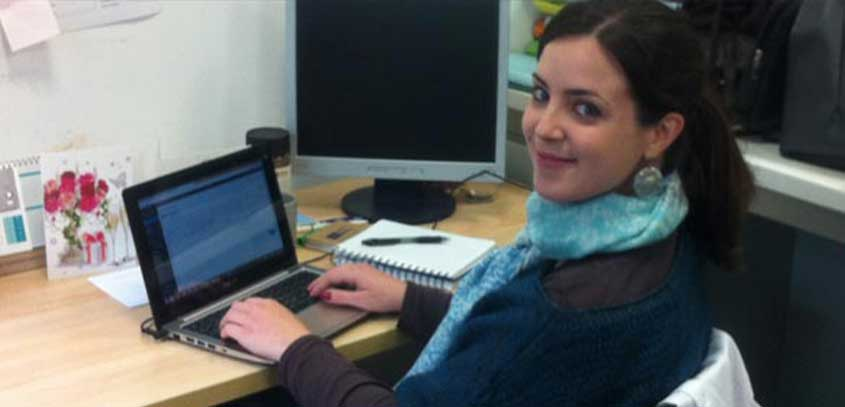

Interviewing Helena García, Erasmus Intern
– November 15, 2015
How did you get to know Water and Health Laboratory?
Checking the agreements established between the University in which I am studying and other universities for Erasmus+ internships, the Water and Health Lab was the one that I found to be more interesting for me. In my study program on Environmental Sciences in Madrid, I had only one course on Environmental Health and my practicum was focused on Ecotoxicology. I thought that is a good idea to have some complementary experience in the field of Environmental Health, so I decided to apply for this placement.
What was your first impression about the lab environment?
It was very good. Every member was very patient and kind to me from the beginning, making me feel as one of them. It was a great opportunity to learn about so many interesting things and work with that multidisciplinary, international and well-prepared team.
How long was your internship at Water and Health Lab?
The duration of my internship was five months. I would like to stay longer, because I think I have lot of things to learn here, but the Erasmus grant is not enough.
Which tasks have you done and which skills did you develop during your internship period?
During these five months, I have had the opportunity of learning new sample preparation techniques for the analysis of several environmental pollutants, such as THMs in water, urine and air filters, bisphenol A in urine and even brain! I learned how a Sample Prep Workbench and a GC/MS/MS chromatograph work. I collaborated on the implementation of a communication plan, learning so many things about social media, web, SEO….
I also had the luck of applying some knowledge that I acquired during my environmental education experience through the design of one of the activities carried out for children in the basis of the Mediterranean Science Festival.
After these 5 months, what are the best and worse things of this experience?
The best thing is everything that I learned, both in theoretical and practical level.
The worst thing….Maybe that I had to work at 21ºC everyday (even in summer) – requirement for the smooth running of the GC-MS/MS (laughs). No seriously, the worst thing is the feeling of knowing that the internship is over when you finally improve your language level and skills for working better.
Would you like to come back to Water and Health lab in the future?
Of course, I would love to come back.